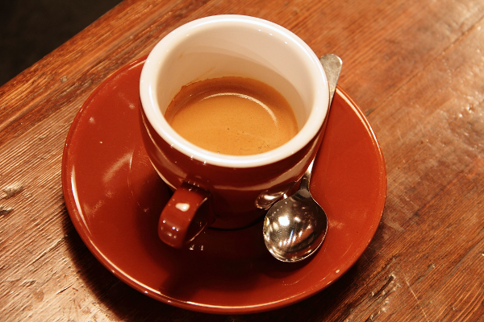

TU COCINA, A TU MANERA
Las recetas que
quieres volver a hacer.
Un lugar para guardar tus ideas, tus sabores
y esos pequeños secretos de cocina.

Tu colección
No hay recetas aquí todavía. Prueba otra búsqueda o añade tu primera receta.
Tu recetario se queda contigo
Se guarda en este navegador. Exporta una copia para proteger tus recetas o llevarlas a otro dispositivo.